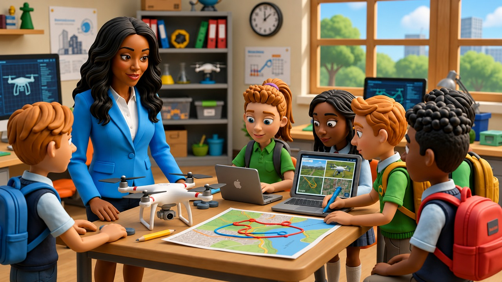

Understand
Understand what AI systems do, how they use data, and how they generate predictions, recommendations, or content.
Grades 9–12
A Grades 9–12 pathway that develops AI literacy through verification, ethics, fairness, synthetic-media analysis, human-centered problem solving, responsible solution design, and portfolio evidence.
Prefer a one-page overview? View the Opportunity Brief →

Student Framework
Understand what AI systems do, how they use data, and how they generate predictions, recommendations, or content.
Evaluate accuracy, source evidence, limitations, and whether AI-generated information can be trusted.
Recognize bias, missing context, unequal impact, and potential harm.
Protect privacy, safeguard sensitive information, and use AI responsibly.
Apply human judgment, communicate decisions, and remain accountable for outcomes.
Curriculum Design
The pathway can be delivered as a sequence, integrated into existing courses, or introduced through selected lessons and interdisciplinary projects.
Core concepts, systems, data, predictions, and the basic building blocks of artificial intelligence.
Evaluating AI-generated content, misinformation, source credibility, accuracy, and evidence.
Examining data, representation, unequal outcomes, missing context, and equitable decision-making.
Privacy, safety, disclosure, academic integrity, appropriate use, and responsible participation.
Creative problem-solving, responsible prompting, verification, revision, and thoughtful human-AI collaboration.
Real-world applications across business, technology, media, health science, engineering, manufacturing, transportation, construction, drones, and aviation.
Transparency, accountability, appeal processes, responsible decision-making, and the role of human judgment.
Core Nine-Week Pathway
The entrepreneurship module is one applied extension. The core AI Innovators pathway builds responsible AI judgment first.
High School Career Pathway
This complete six-lesson module helps students explore how artificial intelligence can support innovation, entrepreneurship, and community problem-solving. Students identify an authentic need, investigate potential users, design a responsible AI-supported solution, and communicate its value through a business or community-impact pitch.
The module works in business, entrepreneurship, computer science, CTE, career education, or interdisciplinary settings. It can be completed without requiring students to use a generative AI tool.
Curriculum architecture, learning objectives, pacing, final challenge, assessments, materials, lesson plans, facilitation guidance, and scoring tools.
Available with approved implementation →Discovery activities, AI Fit Test, value proposition, business-model canvas, risk review, prototype planner, rubric, assessments, and reflection.
View Student Workbook Preview →An editable eight-slide presentation that guides teams from the problem and discovery evidence through responsibility, prototype learning, and the next test.
Available with approved implementation →Six-Lesson Sequence
Each lesson produces one artifact students need for the final business or community challenge.
Students identify a specific need, evaluate its impact and scope, and create an evidence-focused problem statement.
Students map stakeholders, ask neutral questions, synthesize evidence, and identify needs, barriers, and missing perspectives.
Students test whether AI is appropriate, compare simpler alternatives, and map inputs, outputs, limitations, and human review.
Students explain the value created and complete a simple model for delivery, resources, sustainability, and success.
Students review transparency, harm, safeguards, appeal, monitoring, and human accountability before revising the concept.
Students test a low-fidelity prototype, communicate evidence and safeguards, respond to questions, and identify a responsible next step.
Featured Project
Students work individually or in teams to develop an ethical, useful, and realistic AI-supported concept. The experience can culminate in a pitch presentation, prototype, business-model canvas, or community-impact proposal.
Define a meaningful business, school, or community problem.
Learn about potential users, stakeholders, and current solutions.
Develop an AI-supported solution and value proposition.
Examine privacy, bias, accessibility, feasibility, and potential harm.
Create a prototype, concept model, business canvas, or implementation outline.
Communicate the solution, evidence, value, safeguards, and next steps.
The pathway builds transferable skills in problem-solving, communication, research, ethical decision-making, collaboration, and innovation.
Students do more than generate ideas. They examine who benefits, whose data may be used, who could be excluded or harmed, what safeguards are needed, and where human judgment must remain central.
Start With the Pilot
Preview the student workbook or discuss an approved classroom, department, CTE, entrepreneurship, interdisciplinary, or innovation-showcase implementation. The complete teacher and template package is shared privately with approved implementation.
In this grades 9–12 case-based lesson, students investigate a fictional AI-supported internship recommendation system. They examine the purpose of the system, the information it uses, who may be affected, what may be missing or unfair, and where human review is required.
Student Tool
A reusable framework students apply whenever they evaluate an AI-supported decision, tool, or recommendation.
What decision or problem is the AI system supporting?
What information is being used, and is it accurate and relevant?
Who could benefit, be excluded, or be harmed?
What may be missing, biased, unclear, or difficult to challenge?
Who reviews the result, who has final authority, and how can a decision be appealed?